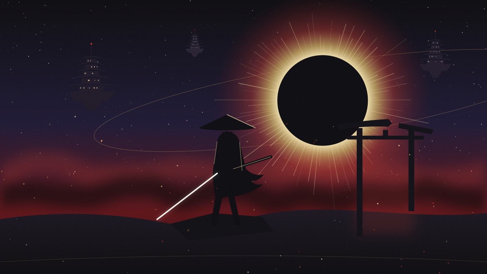

Direction artistique : l'encre, l'or et le vide
Six couleurs, des silhouettes lisibles à dix mètres et un soleil qui ne brille plus : les règles qui donnent son identité visuelle à Ronin of the Black Sun.
Lire le devlog →Journal de développement
Combat, direction artistique, univers : chaque mois, l'équipe du studio raconte la fabrication de son souls-like de science-fiction, sans filtre.
Six couleurs, des silhouettes lisibles à dix mètres et un soleil qui ne brille plus : les règles qui donnent son identité visuelle à Ronin of the Black Sun.
Lire le devlog →
Dix images pour parer, une barre de posture à briser et des combats sans sol ni plafond : comment nous avons conçu les duels au katana de Ronin of the Black Sun.
Lire le devlog →
Un croquis à l'encre, une éclipse au-dessus de la Sainte-Victoire et une question : que devient l'honneur d'un samouraï quand son soleil s'éteint ?
Lire le devlog →Abonnez-vous au flux RSS ou proposez-nous un sujet : nous y répondrons dans un prochain article.